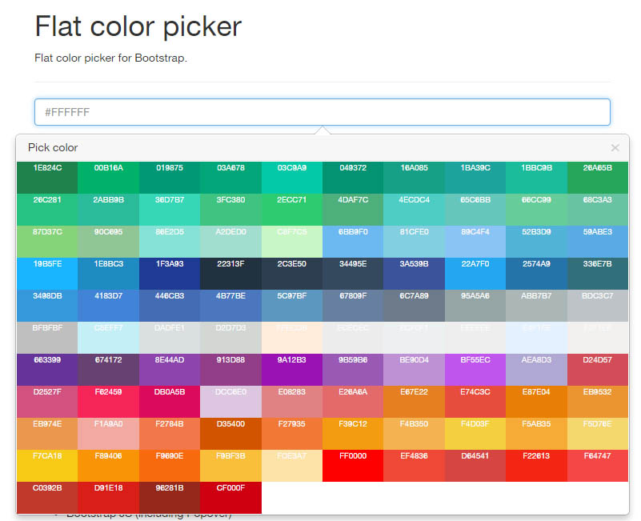

Flat color picker v0.2
Flat color picker for Bootstrap.
Features
- Flat color
- Responsive
- Displays recent selection
- Color search/filter
- Displays color name, HEX code and RGB
- Lightweight
Todo
- Turn on/off features
- May be add possibility to attach color picker on button other than input
- More options
- Documentation
Dependencies
- jQuery
- Bootstrap CSS
- Bootstrap JS (including Popover)
- jQuery xcolor plugin
Screenshots

Demo
Seriously? See most top of this page.
Lincense
MIT License (http://opensource.org/licenses/MIT)
Credits
- http://flatuicolors.com/ (color reference)
- http://www.flatuicolorpicker.com/ (color reference)
- http://jsbin.com/ (Yes, I created this using JSbin.com editor)
- https://github.com/infusion/jQuery-xcolor (jQuery xcolor plugin)
Docs
Libraries
<script src="//code.jquery.com/jquery.min.js"></script>
<link href="//maxcdn.bootstrapcdn.com/bootstrap/3.3.0/css/bootstrap.min.css" rel="stylesheet" type="text/css" />
<script src="//maxcdn.bootstrapcdn.com/bootstrap/3.3.0/js/bootstrap.min.js"></script>
<script src="js/flatcolorpicker.js"></script>
<link href="css/flatcolorpicker.css" rel="stylesheet" type="text/css" />
Form input
<input type="text" class="form-control flatcolorpicker" title="Pick color" data-placement="bottom">
Download
https://github.com/takien/FlatColorPicker/releases